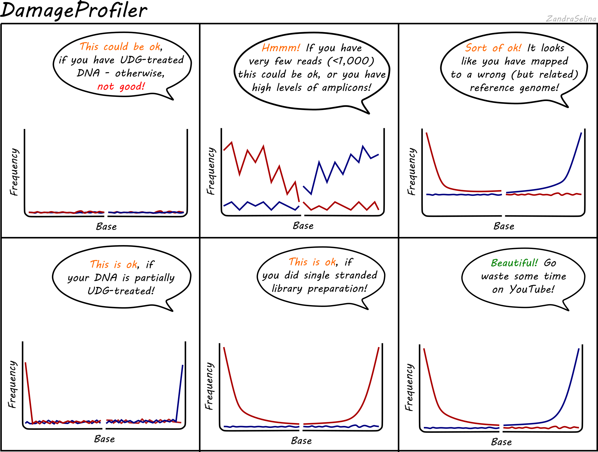

layout: true <div class="my-header"></div> <div class="my-footer"></div> --- class: center, middle <br/> <br/> ## Introductory Tutorial <br/> James A. Fellows Yates <br/> <br/> <a rel="license" href="http://creativecommons.org/licenses/by-sa/4.0/"> <img alt="Creative Commons License" style="border-width:0" src="https://i.creativecommons.org/l/by-sa/4.0/88x31.png" /> </a> .small[<br />This work is licensed under a <br/> <a rel="license" href="http://creativecommons.org/licenses/by-sa/4.0/">Creative Commons Attribution-ShareAlike 4.0 International License</a>.] --- # What is [nf-core/eager](https://github.com/nf-core/eager)? * The next generation of the **E**fficient **A**ncient **GE**nome **R**econstruction pipeline (v1: [Peltzer et al. 2016](https://dx.doi.org/10.1186/s13059-016-0918-z)) * **What** does it do? * Required basic processing tasks of NGS data (e.g. sequence adapter clipping, mapping) * Performs standard ancient DNA analyses (e.g. metagenomic screening, nuclear DNA contamination estimation etc.) * All configured specifically for ancient DNA (damage accounted parameters, damage patterns etc.) * **Why** use it over other pipelines? * Easily maintainable and extendible * High portable (can run from laptops to HPC clusters) * Highly reproducible (comes with all the required software all set up for you) * High quality software development guidelines ensures stability and robustness (thanks [nf-core](https://nf-co.re)!) --- # Overview? This tutorial provides step by step instructions on how to: 1. Install the pipeline 2. Run basic example commands 3. How to view the results 4. How to optimise for your computing infrastructure 5. Run on your own data > This tutorial is for trying out the pipeline only, it is not necessarily recommended for 'production' use! See the end of the presentation for more information. --- class: middle # Setup --- # Before we start This walk-through assumes you are working on a unix based computer or server, with [`python`](https://www.python.org/) and [`java`](https://openjdk.java.net/) installed, and are familiar with a terminal (**open one now!**). Python and Java are very common tools that are normally already installed on a PC or server. To check they already are, please see if you get a version displayed like so: ```bash $ java -version openjdk version "11.0.6" 2020-01-14 OpenJDK Runtime Environment (build 11.0.6+10-post-Ubuntu-1ubuntu118.04.1) OpenJDK 64-Bit Server VM (build 11.0.6+10-post-Ubuntu-1ubuntu118.04.1, mixed mode, sharing) ``` ```bash $ python --version Python 2.7.17 ``` The exact version doesn't matter, but if you get no output, please contact your system administrator or follow the documentation provided on the links to above to install it on your own machine. --- # What will I need? Firstly lets make a directory to run our tests. ```bash $ mkdir nfcore-eager_test $ cd nfcore-eager_test ``` > This directory must be in a location that has at least ~3GB of space! We ourselves will only need to install **two** additional things to run the pipeline (the pipeline does the rest!) These two requirements are: .center[ [<img src="https://docs.conda.io/en/latest/_images/conda_logo.svg" width="30%" hspace="50" />](https://conda.io/) and [<img src="https://www.nextflow.io/img/nextflow2014_no-bg.png" width="30%" hspace="50"/>](https://www.nextflow.io/) ] --- # What will I need? Lets first check if you've already got either of these two already installed. As before, run the following commands and see if you get a version printed to screen ```bash $ conda --version conda 4.8.2 ``` ```bash $ nextflow -version N E X T F L O W version 20.01.0 build 5264 created 12-02-2020 10:14 UTC (11:14 CEST) cite doi:10.1038/nbt.3820 http://nextflow.io ``` > ⚠️ You need to have nextflow at a minimum version of `19.10.0` to run nf-core/eager **If you get versions reported as above**, please skip to [Getting nf-core/eager](#getting-nf-core-eager) **If you get no versions reported for one or both**, please go to the next slide! --- # Installing [<img src="https://docs.conda.io/en/latest/_images/conda_logo.svg" width="20%" />](https://conda.io/) Next, lets install `conda` which will be our software and environment manager (for this tutorial\*). This means it will: * Download and installs all the tools used in the pipeline in an [enviroment](https://en.wikipedia.org/wiki/Conda_(package_manager)) * Ensure everyone using the pipeline have the same versions for reproducibility To download the `conda` installer, and run it: > ⚠️ You may need to change the [link](https://docs.conda.io/en/latest/miniconda.html#linux-installers) depending on your setup, e.g. 32-bit operating systems ```bash $ wget https://repo.anaconda.com/miniconda/Miniconda3-latest-Linux-x86_64.sh $ sh Miniconda3-latest-Linux-x86_64.sh ``` ...then follow the instructions in the terminal. > \* The use of docker or singularity is preferred as they are more robust and faster to load containers, but requires more involved installation and sysadmin rights. See the [nf-core documentation](https://nf-co.re/usage/installation) for more information --- # Configuring [<img src="https://docs.conda.io/en/latest/_images/conda_logo.svg" width="20%" />](https://conda.io/) to use [<img src="https://bioconda.github.io/_images/bioconda.png" width="30%" />](https://bioconda.github.io/) .left[ Once conda is installed, we must add to it the [bioconda](https://bioconda.github.io/) channel, which hosts the most of the bioinformatic tools used in nf-core/eager. ```bash $ conda config --add channels defaults $ conda config --add channels bioconda $ conda config --add channels conda-forge ``` ] --- # Installing [<img src="https://www.nextflow.io/img/nextflow2014_no-bg.png" width="30%"/>](https://www.nextflow.io/) Now we need to install `nextflow`. * This is the pipeline framework which links all the tools together for you * When using a job scheduler on a server, it will also do the submissions for you To download and install nextflow ```bash $ curl -s https://get.nextflow.io | bash ``` you should now see in your folder an executable called `nextflow`. ```bash $ ls nextflow ``` To test, run the version command as above ```bash ./nextflow -version N E X T F L O W version 20.01.0 build 5264 created 12-02-2020 10:14 UTC (11:14 CEST) <...> ``` --- name: getting-nf-core-eager # Getting nf-core/eager Finally, we just need tell to `nextflow` to download nf-core/eager for you. We do this by 'pulling' the pipeline code. This applies for every nextflow pipeline on github. ```bash $ ./nextflow pull nf-core/eager -r 2.1.0 Checking nf-core/eager ... done - revision: 26ae7e945f [2.1.0] ``` We specify the version of nf-core/eager with `-r` (or revision). It is _highly_ recommended to include this is in all nf-core/eager commands for reproducibility. If you download multiple versions of the pipeline, you must always specify which version to use with `-r`. > The pipeline code will be stored in your home directory, normally in`~/.nextflow/assets/nf-core/eager`. Other people using your cluster will not have access to this, so will also have to run `nextflow pull`. This is also why always running with `-r` is recommended. --- name: basic-example class: middle # Basic example --- # Run a basic test Now we can see how a typical nf-core/eager run looks like. Our basic example test will do the following: 1. Download and configure all the tools needed for the pipeline 2. Download a collection of paired end FASTQ files and a reference FASTA 3. Perform sequencing QC, adapter clipping and paired end merging 4. Index the reference FASTA 5. Map the merged reads to the indexed FASTA 6. Perform read de-duplication 7. Run library complexity estimation 8. Perform mapping QC 9. Run damage pattern analysis 10. Generate an interactive results report To run this example, we run the following simple command: ```bash $ nextflow run nf-core/eager -profile conda,test --paired_end ``` Once you start the command, go to the next slide. --- # What is on my screen - parameters? While running the pipeline, nextflow will first report to you the settings that are specified for this particular run. ```bash N E X T F L O W ~ version 20.01.0 Launching `nf-core/eager` [irreverent_nightingale] - revision: 26ae7e945f [2.1.0] ---------------------------------------------------- ,--./,-. ___ __ __ __ ___ /,-._.--~' |\ | |__ __ / ` / \ |__) |__ } { | \| | \__, \__/ | \ |___ \`-._,-`-, `._,._,' nf-core/eager v2.1.0 ---------------------------------------------------- Pipeline Name : nf-core/eager Pipeline Version : 2.1.0 Run Name : irreverent_nightingale Reads : data/*{1,2}.fastq.gz ``` > Important to note for later is the 'run name' which is `irreverent_nightingale` in this case. --- # What is on my screen - status? Once the conda environment is made, you will see progress bars for each step of the pipeline. ```bash Config Description: Minimal test dataset to check pipeline function ---------------------------------------------------- executor > local (26) [45/32bdfa] process > makeBWAIndex [100%] 1 of 1 ✔ [1a/d59211] process > makeFastaIndex [100%] 1 of 1 ✔ [15/3b697d] process > makeSeqDict [100%] 1 of 1 ✔ [- ] process > convertBam - [- ] process > indexinputbam - [3a/8f45a4] process > fastqc [100%] 2 of 2 ✔ ``` Depending on the step being run, you will have one process for each file (e.g. 1 of 2; on the right). Each process-sample combination gets a unique 'hash' ID (left). Jobs are submitted while memory/CPUs limits are not reached, and jobs not requiring the same files will be submitted in parallel (i.e. not linearly). Processes report success or fail. Steps not turned on by the user are shown as `-`. --- # 🎉 Finished! Now what? ```bash [da/298b0f] process > multiqc [100%] 1 of 1 ✔ -[nf-core/eager] Pipeline completed successfully- Completed at: 07-Mar-2020 14:18:16 Duration : 2m 11s CPU hours : (a few seconds) Succeeded : 26 ``` We can now look at our results. If not otherwise specified, under `results/`. ```bash $ cd results/ $ ls damageprofiler deduplication Documentation endorSpy FastQC mapping MultiQC pipeline_info preseq qualimap read_merging reference_genome samtools SoftwareVersions ``` The first port of call will be the view the HTML [<img src="https://multiqc.info/logos/MultiQC_logo.svg " width="10%" />](https://https://multiqc.info/) run report ```bash $ cd MultiQC/ $ ls multiqc_data multiqc_report.html ``` > ⚠️ You should load this in a web browser - so either download the report onto your local PC, or mount the server to your file browser. An example is on the next page if you cannot currently do this. --- class: center # Pretty pictures! Here is an example (Click <a href="images/multiqc_report.html" target="_blank">here</a> <a ref=> here </a> for a full page version) <iframe width="100%" height="50%" frameborder="1" src="images/multiqc_report.html" frameborder="0" allow="encrypted-media" allowfullscreen></iframe> Scroll through a bit so you can get a feeling of the types of you see, and for more information go to the next slide. --- # What does that all mean? .left-column[ If you're unsure how to interpret the plots - particularly in the context of ancient DNA - we provide _extensive_ documentation and schematic diagrams to aid interpretation. The documentation covers information such as - How to identify potential sequencing problems? - How to understand how good a sample was (e.g. on-target DNA content)? - How to validate the on-target DNA that I retrieved is actually _ancient_? ] .right-column[  ] The results documentation is output for every run under under `results/Documentation/results_description.html` or can be seen at the <a href="https://nf-co.re/eager/docs/usage" target="_blank">nf-core website</a> --- # But what about my files? To find the final output files for each process for your own downstream processing, you can explore the `results/` directories for each tool. For example, lets find a deduplicated BAM file that you would want to use e.g. for viewing in IGV. We can move out of `MultiQC` and into the deduplication directory. ```bash $ cd ../deduplication $ ls JK2782_TGGCCGATCAACGA_L008_R1_001.fastq.gz.tengrand.fq.combined.fq.mapped/ JK2802_AGAATAACCTACCA_L008_R1_001.fastq.gz.tengrand.fq.combined.fq.mapped/ ``` In this case, there is one directory for each sample. Look inside one. ```bash $ cd JK2782_TGGCCGATCAACGA_L008_R1_001.fastq.gz.tengrand.fq.combined.fq.mapped/ $ ls JK2782_TGGCCGATCAACGA_L008_R1_001.fastq.gz.tengrand.fq.combined.fq.mapped.dedup.json JK2782_TGGCCGATCAACGA_L008_R1_001.fastq.gz.tengrand.fq.combined.fq.mapped_rmdup.bam JK2782_TGGCCGATCAACGA_L008_R1_001.fastq.gz.tengrand.fq.combined.fq.mapped.hist JK2782_TGGCCGATCAACGA_L008_R1_001.fastq.gz.tengrand.fq.combined.fq.mapped_rmdup.bam.csi ``` The `.json`, and `.hist` files contain summary stats from `dedup`; each deduplicated BAM (`_rmdup.bam`) comes with a BAM index (`_rmdup.bam.csi`) > Not sure where to find what you're looking for? Check the [documentation](https://nf-co.re/eager/docs/usage) --- # Clean up! Once you're happy with the results, you simply clean up all intermediate files with ```bash $ nextflow clean -f -k ``` **_but wait, what do you mean by clean up_?** <br> **⚠️ This is important! Please read the next slide** --- # Clean up - explanation Nextflow retains all intermediate files in case something goes wrong. It keeps track of when a process fails and allows you to re-run the pipeline again, but without having to re-run the successful processes. This can be done by running the same `nextflow run` command, but with the `-resume` flag. If encounter an error, nextflow will typically report the error from the process and tell you in which 'working' directory the error occurred where you can investigate. These directories are named with the 'hashes' that are displayed in the status information when the pipeline is running and are stored in `work/` (but can be specified elsewhere, by using the `-w` flag when running `nextflow run`). e.g. ```bash work/58/d811f666d1a1a6143fb5bfcc368227/ ``` You can configure nextflow to run **automagically** when a run completes successfully. Please see [later slides](#profiles) for instructions on how to set this up. --- # Progress So far we have covered the basic structure of a nextflow run. 1. How to get the pipeline code (and how to get a specific version) 2. How to run a basic run command 3. What you see while the run is running 4. Where to find the results **If you would like to learn how to optimise the pipeline** for a server/cluster see the next slide. **If you would like to try a real nf-core/eager run with your own data**, go [here](#real-life-test) --- # Customising nf-core pipeline runs A couple of things you may have noticed is that 1. the nextflow binary is stored in the current tutorial directory 2. the nf-core conda environment has been saved in the working directory of the test run Neither are ideal when you want to keep everything in a central place, so you don't have to keep downloading things. For number 1 - the best solution is to place the nextflow binary in a common folder e.g. `~/bin/` which you add to your bash [`$PATH`](https://unix.stackexchange.com/a/26059) variable. In contrast, for number 2, the best way to deal this is with nextflow [_profiles_](https://www.nextflow.io/docs/latest/config.html#config-profiles). These take a little more time to setup, but are worth in the long run. See the next slide for more information. --- name: profiles class: middle # Profiles --- # Profiles Profiles allow you to - Specify default settings for all nextflow pipelines - A common folder to store all environments, so you don't have to download them every pipeline run - Set nextflow to use a scheduler, including automatic submission to certain queues, walltimes etc. - Set maximum resource limits (CPUs, memory, parallel tasks) - Can be stored centrally on [nf-core/configs](https://github.com/nf-core/configs) for use by _every_ user of a cluster We will now walk through how one makes a basic 'custom' profile, which you can store privately and use for all pipelines. --- # Base profile preparation For this example, we are going to 'borrow' the file that nf-core/eager uses to define profiles, and do the following: - specify to always automatically clean up intermediate files - specify a 'central' storage for the conda environments To begin, make sure you are back in your main `nfcore-eager_test/` directory, and create a new directory as follows ```bash $ mkdir conda_cache ``` This is the directory we will use to store all conda environments when running all your pipeline runs (rather than downloading fresh each time) --- # Base profile setup Now, in the main test directory, copy the `nextflow config` file to your test directory from your `.nextflow/` directory (typically located in your `home` directory). ```bash cp ~/.nextflow/assets/nf-core/eager/nextflow.config nextflow_custom.config ``` Then copy a couple more of additional sub-configs in the that the config file requires (you don't need to worry about these). ```bash mkdir conf cp ~/.nextflow/assets/nf-core/eager/conf/{test,base}.config conf/ ``` One copied, we can start making our own profile within the 'custom' config file. Open the newly created `nextflow_custom.config` file in the text editor of your choice (e.g. `nano`). --- # Creating a custom profile Scroll down to the line that says `profiles {` (around line 257). After the `singularity` profile and before `test` profiles, we can start writing our own. Copy and paste `my_profile` block into your `nextflow_custom.config` file, replacing the `my_profile` name to one of your choice - typically the name of the cluster. You should also add some identifying information, as this helps you know that you've loaded the correct profile. ```groovy singularity { singularity.enabled = true } my_profile { //Profile config names for <your_name> params { config_profile_description = '<your_name> nf-core profile.' config_profile_contact = '<your_name>' config_profile_url = 'nf-co.re' } } test { includeConfig 'conf/test.config'} ``` --- # Custom options We will now add a few custom options: 1) set cleanup to always be performed and 2) specify where to store conda environments ```groovy my_profile { //Profile config names for <your_name> params { config_profile_description = '<your_name> nf-core profile.' config_profile_contact = '<your_name>' config_profile_url = 'nf-co.re' } cleanup = true conda { cacheDir = '<path_to>/nfcore-eager_test/conda_cache' } } ``` Save the `nextflow_custom.config` file with the changes. > If you want to define a scheduler, see other profiles on [nf-core](https://github.com/nf-core/configs/tree/master/conf) for examples. --- # Try out your own profile! Now can try running the same test command as before, but this time specifying our newly created custom config. ```bash nextflow run nf-core/eager -c nextflow_custom.config -profile my_profile,test --paired_end ``` You should now see the following evidence that the profile is working correctly - You should see something the conda environment is being created in your centralised directory e.g. ```bash Creating Conda env: ~/.nextflow/assets/nf-core/eager/environment.yml [cache ~/nfcore-eager_test/conda_cache/nf-core-eager-2.1.0-7edf18b2f7e314cbea8915da928c4f49] ``` - If you scroll up to the pipeline information at the top, you should see near the bottom something like: `Config Profile : my_profile,test` If you see this, this suggests the config is loaded correctly! To check, check `~/nfcore-eager_test/conda_cache/` where a new directory should exist. Alternatively, check any of the 'hash' folders in `work/`, which should now be empty. --- name:real-life-test name: real-life-test class: middle # Real-life test --- # Now with real data! > ⚠️ If running on a server/cluster, and you have specified a scheduler in your profile, the next steps should be run from your headnode! > ⚠️ If you are running a lot and/or large amount of FASTQ files that may take a long time- it is recommended to run the nextflow command in a [`screen`](https://www.gnu.org/software/screen/) session or similar, so to not to interrupt the scheduler To use your own data, you need to specify the paths to FASTQs in the run command in quotes with `--reads`. Importantly, for paired-end data you must use wildcards and expansions to group pairs together: > ⚠️ Don't this run yet! ```bash $ nextflow run nf-core/eager \ > -profile conda \ > --paired-end \ > --reads 'testdata/Mammoth/fastq/*_{R1,R2}_*.fq.gz' ``` whereby `{R1,R2}` indicates all files that have the same name, other than R1 and R2, should be considered one set of sequencing files of a sequencing lane of a sample. --- # Real-life test To make a slightly more complex command, we can also add a path to our FASTA file, we will skip FastQC and set our bwa mismatch value to a stricter `0.1`. ```bash $ nextflow run nf-core/eager \ > -profile conda \ > --paired-end \ > --reads 'testdata/Mammoth/fastq/*_{R1,R2}_*.fq.gz' \ > --fasta 'reference/Mammoth/Mammoth_MT_Krause.fasta.gz' \ > --skip_fastqc \ > --bwaalnn 0.1 ``` Observe that there are three types of options: - **boolean:** (i.e. true/false), i.e. options you can turn on and off by just giving the flag, such as `--paired-end` - **string:** these are typically used for file paths (e.g. `--reads`) or parameters with multiple options. These should be wrapped in quotes! - **integer:** these are number values. These do not need to be in quotes. Please see the rest of the [nf-core/eager documentation](https://nf-co.re/eager/docs/usage) for other options. Configure your command as to you wish, try running it and exploring the output! --- # Summary From this tutorial you should be now familiar how to: 1. Set up nextflow and conda to try out nf-core pipelines 2. Run a basic nf-core/eager run using the internal test data 3. How to find and explore the output results 4. How to write a simple profile for customising nextflow settings 5. Try running a more complex example Please keep trying things out and send us feedback. We are actively looking for: - bug-reports - default setting changes - feature requests - testers - And even better: docs/code contributions! If you would like to get involved please join us on [github](https://github.com/nf-core/eager) or in the nf-core [slack](https://nf-co.re/join/slack) workspace in the #eager channel